UC classification (microarray datasets)
Czarnewski et al 2019
Paulo Czarnewski
30 May 2019
1 Load Packages
#Source my custom functions
source("support_functions.R")
#Install and load packages
inst_packages(c("annotate","hgu133plus2.db","Biobase","Rtsne","GEOquery","rafalib","multcomp","RColorBrewer","preprocessCore","data.table","limma","pheatmap","ROCR","epitools","beeswarm","EDASeq","vioplot","caret","pROC","e1071","car","clustertend","seriation","factoextra","enrichR"))
#Define color pallete
pallete <- c(brewer.pal(8,"Set2"),brewer.pal(9,"Set1"))[2:8]
pallete2 <- c(brewer.pal(8,"Set2"),brewer.pal(9,"Set1"))
color <- colorRampPalette(c("gray","red","blue"))(10)
#homologs <- fread('http://www.informatics.jax.org/downloads/reports/HMD_HumanPhenotype.rpt')
#homologs <- data.frame("mouse"=homologs$V5,"human"=homologs$V1)
homologs <- read.csv("../processed_files/homologs.csv",row.names = 1)2 Loading Human dataset from GEO
#List of GSE to use in the anlaysis
GEOs <- c("GSE12251","GSE73661","GSE23597","GSE16879")
#Load all GSEs and save to a local files for later easy load
for(i in GEOs){
if(!file.exists(paste0("../downloaded/",i,".annot")) & !file.exists(paste0(i,".gset"))){
gset <- getGEO(i,GSEMatrix =TRUE, getGPL = T,AnnotGPL = T)[[1]]
annot <- fData(gset)
save(annot,file = paste0(i,".annot"))
save(gset,file = paste0(i,".gset"))
write.csv(as.data.frame(pData(gset)),paste0(i," pData.csv"),row.names = T) }}
#Load gset and annot files to the environment
for(i in GEOs){
load(paste0("../downloaded/",i,".gset"))
assign(paste0("gset",i), gset)
load(paste0("../downloaded/",i,".annot"))
assign(paste0("annot",i),annot) }
#ADJUST GENE NAMES AND REMOVE DUPLICATED GENES
for(i in GEOs){
annot <- get(paste0("annot",i))
annot <- annot[annot$`Gene symbol` != "",]
annot <- annot[grep("///",annot$`Gene symbol`,invert = T),]
data <- exprs(get(paste0("gset",i)))[as.character(annot$ID),]
rownames(data) <- annot$`Gene symbol`
data <- data[!duplicated(rownames(data)),]
data <- data[order(rownames(data)),]
assign(paste0("data",i),data) }
#Free some space by removing the raw annot and temporary files
rm(list = c("data","annot","gset",paste0("annot",GEOs)))3 Evaluation of data distribution
#tansform all data to LOG scale
mypar(1,4)
for (i in GEOs){
data <- get(paste0("data",i))
if (max(data) > 50){ data <- log(data+1,2) }
filter <- apply(data,1,function(x){ sum(x>6) > ncol(data)*0.2 })
data <- data[filter,]
shist(data,xlim=c(5,17),main=i,col="red")
assign(paste0("data",i),data) }
#Merge datasets
genes_in_common <- c()
for(i in GEOs){
if(length(genes_in_common)==0){ genes_in_common <- rownames(get(paste0("data",i)))
} else { genes_in_common <- genes_in_common[genes_in_common %in% rownames(get(paste0("data",i)))] } }
data <- matrix()
for(i in GEOs){
if(dim(data)[1] == 1){ data <- get(paste0("data",i))[genes_in_common,]
} else { data <- cbind(data,get(paste0("data",i))[genes_in_common,]) }}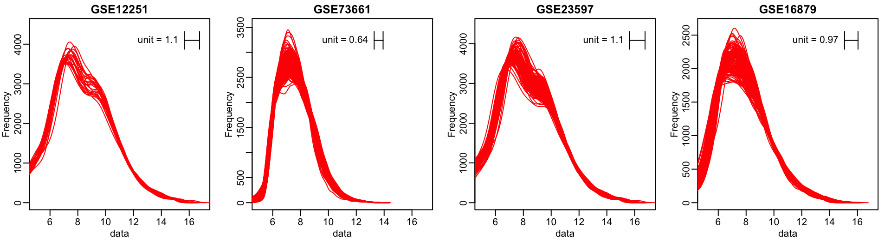
4 Loading phenotipic data
#CONSTRUCT A SIMPLIFIED PHENOTIPIC DATA FOR FURTHER ANALYSIS
phenotData <- read.csv("../processed_files/merged_phenodata.csv",row.names = 1)
use_groups <- (phenotData$'week..w..ch1' %in% c("W0"))
Group <- factor(phenotData$resp[use_groups])
phenotData <- phenotData[use_groups,]
#Re-order the samples based on their group on the phenotypic dataset
data <- data[,rownames(phenotData)]
library(sva)
mypar(1,4)
limma::plotMA(data,main="MAplot",xlab = "Average log-expression", ylab = "Expression log-ratio",ylim=c(-5,5),xlim=c(5,17)); abline(h=0,col="red",lty=2,lwd=1)
plotMDS(data,col=as.numeric(phenotData$GEO),pch=16)
modCombat <- model.matrix(~1,data=phenotData)
combat_edata <- ComBat(dat=data,batch=phenotData$GEO,mod=modCombat)
limma::plotMA(combat_edata,xlab = "Average log-expression", main="MAplot (after ComBat)",ylab = "Expression log-ratio",ylim=c(-5,5),xlim=c(5,17)); abline(h=0,col="red",lty=2,lwd=1)
plotMDS(combat_edata,col=as.numeric(phenotData$GEO),pch=16)
mypar(1,1)
plotRLE(data,col=as.factor(phenotData$GEO),outline=F,xaxs="i", main=paste0("RLE"),las=2,cex.axis=0.5,cex.main=0.8,cex=0.1,pch=16,ylim=c(-0.5,0.3))
combat_edata <- normalizeBetweenArrays(combat_edata, method = "cyclicloess")
data <- combat_edata
mypar(1,1)
plotRLE(combat_edata,col=as.factor(phenotData$GEO), outline=F,main=paste0("RLE (after ComBat)"),las=2,cex.axis=0.5,cex.main=0.8,cex=0.1,pch=16,ylim=c(-0.2,0.2))
mypar(1,4)
shist(combat_edata,xlim=c(5,17),main="All together",col="red")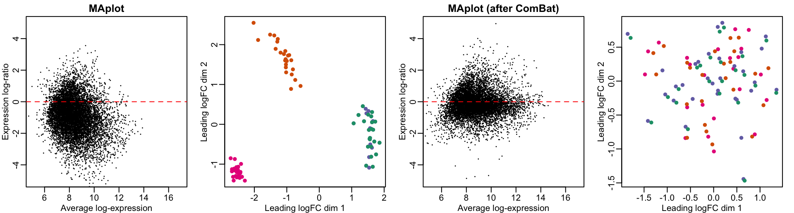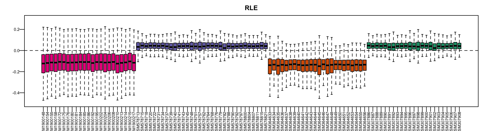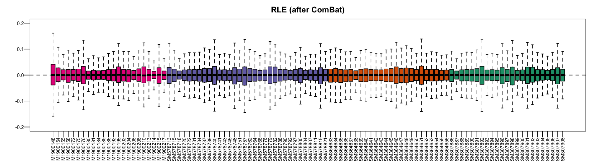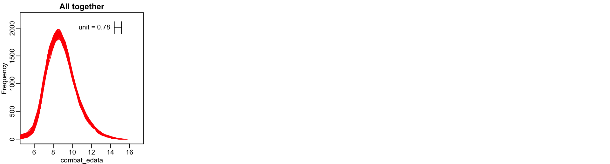
5 Load plot series function
Here, we created a series of plots to explore the data with ease. Therefore, we can simply source that function.
source("plot_functions.R")6 Selecting the top variable genes
rowVAR <- apply(data,1,function(x){var(x)})
top_rowVAR <- sort(rowVAR,decreasing = T)[1:100]
#barplot(top_rowVAR[20:1],horiz=T,las=1,xlab="variance",yaxs="i",xaxs="i",xlim=c(0,1.5*max(top_rowVAR[20:1])),border=NA)
VAR_select <- names(top_rowVAR)
d_VAR <- data[VAR_select,]
suppressWarnings(plot_series(d_VAR))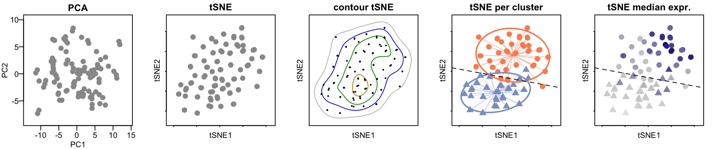
7 Selecting the top CV genes
rowCV <- apply(data,1,function(x){var(x)/mean(x)})
top_rowCV <- sort(rowCV,decreasing = T)[1:100]
#barplot(top_rowCV[20:1],horiz=T,las=1,xlab="variance",yaxs="i",xaxs="i",xlim=c(0,1.5*max(top_rowCV[20:1])),border=NA)
CV_select <- names(top_rowCV)
d_CV <- data[CV_select,]
suppressWarnings(plot_series(d_CV))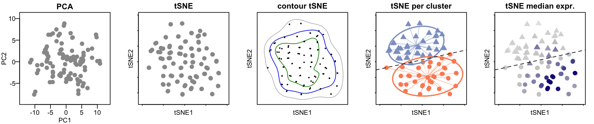
8 Selecting the top human genes by PCA
PC <- prcomp(t(data))
round(PC$sdev^2 / sum(PC$sdev^2) *100,2)
dim(PC$x)
x <- PC$rotation[order(PC$rotation[,1]),1][20:1]
#barplot(x,horiz=T,las=1,xlab="variance",yaxs="i",xaxs="i",xlim=c(0,1.5*max(x)),border=NA)
#diptest::dip.test(data[names(PC$rotation[,1][order(PC$rotation[,1])][100:1]),])
#mypar(mar=c(4,6,2,2))
#barplot(top_rowVAR[20:1],horiz=T,las=1,xlab="variance")## [1] 24.49 9.39 4.80 4.27 3.74 2.85 2.78 2.61 2.34 2.07 1.84
## [12] 1.81 1.64 1.54 1.35 1.30 1.26 1.17 1.11 1.06 1.04 1.00
## [23] 0.94 0.93 0.88 0.87 0.83 0.80 0.77 0.74 0.74 0.72 0.71
## [34] 0.68 0.66 0.63 0.60 0.59 0.58 0.55 0.54 0.53 0.52 0.48
## [45] 0.46 0.46 0.46 0.44 0.43 0.42 0.41 0.40 0.39 0.37 0.35
## [56] 0.34 0.32 0.31 0.30 0.28 0.25 0.25 0.23 0.22 0.22 0.21
## [67] 0.20 0.19 0.18 0.18 0.16 0.16 0.15 0.14 0.13 0.13 0.12
## [78] 0.03 0.00 0.00 0.00 0.00 0.00 0.00 0.00 0.00 0.00 0.00
## [89] 0.00 0.00 0.00 0.00 0.00 0.00 0.00 0.00 0.00 0.00 0.00
## [100] 0.00 0.00 0.00
## [1] 102 1029 Computing clustering tendency by the different methods of gene selection
temp2 <- list()
for(i in 1:100){
k <- sample(colnames(data),round(ncol(data)*.9),replace = F)
temp2[["all"]] <- c(temp2[["all"]], diptest::dip.test(data[,k])$p.value )
temp2[["var."]] <- c(temp2[["var."]], diptest::dip.test(d_VAR[,k])$p.value )
temp2[["disp."]] <- c(temp2[["disp."]], diptest::dip.test(d_CV[,k])$p.value )
temp2[["PC1"]] <- c(temp2[["PC1"]], diptest::dip.test(data[names(PC$rotation[order(PC$rotation[,1]),1][100:1]),][,k])$p.value )
temp2[["PC2"]] <- c(temp2[["PC2"]], diptest::dip.test(data[names(PC$rotation[order(PC$rotation[,2]),2][100:1]),][,k])$p.value )
}
mypar()
boxplot(temp2,ylim=c(0,1.1),las=2,col=paste0(pallete[1:5],"30") ,yaxs="i",ylab="Hartigan's unimodality p.value",lines=2)
#beeswarm(temp2,add = T,bg=pallete[3:4],pch=21,cex=2)
points(c(rep(1,length(temp2$all)),rep(2,length(temp2$all)),rep(3,length(temp2$all)),rep(4,length(temp2$all)),rep(5,length(temp2$all))),
c(temp2$all,temp2$var.,temp2$disp.,temp2$PC1,temp2$PC2),pch=21,
bg=pallete[c(rep(1,length(temp2$all)),rep(2,length(temp2$all)),rep(3,length(temp2$all)),rep(4,length(temp2$all)),rep(5,length(temp2$all)))])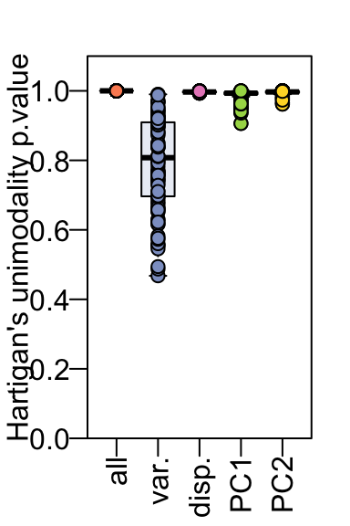
10 Using MOUSE PC1 and PC2 together to separate
n <- 100
PC1 <- as.matrix(read.csv(paste0("/Users/Czarnewski/Box Sync/Paulo_data/20160808 - RNAseq data from DSS and Citrobacter kinetics/20170825-Heatmap cluster GO-enrichment DSS 9 clusters/Leading genes PC1.csv"),row.names = 1))
PC2 <- as.matrix(read.csv(paste0("/Users/Czarnewski/Box Sync/Paulo_data/20160808 - RNAseq data from DSS and Citrobacter kinetics/20170825-Heatmap cluster GO-enrichment DSS 9 clusters/Leading genes PC2.csv"),row.names = 1))
PC_genes <- unique(c(rownames(PC1)[1:n],rownames(PC2)[1:n]))
h_PC <- homologs[homologs[,1] %in% PC_genes,]
h_PC <- sort(unique(as.vector(h_PC[,2])))
cPC <- data[h_PC[h_PC %in% rownames(data)],]
suppressWarnings(plot_series(cPC))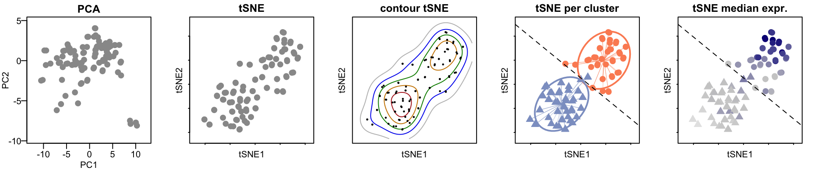
t_data <- cPC11 Bootstraping the Dip index for clusterbility
temp2 <- list()
for(i in 1:100){
k <- sample(colnames(data),round(ncol(data)*.9),replace = F)
temp2[["d_VAR"]] <- c(temp2[["d_VAR"]], diptest::dip.test(d_VAR[,k])$p.value )
temp2[["cPC"]] <- c(temp2[["cPC"]], diptest::dip.test(cPC[,k])$p.value )
}
mypar()
boxplot(temp2[1:2],ylim=c(0,1.1),las=1,col=paste0(pallete[3:4],"30") ,yaxs="i",ylab="Hartigan's unimodality p.value")
#beeswarm(temp2,add = T,bg=pallete[3:4],pch=21,cex=2)
for(i in 1:length(temp2$cPC)){ lines(c(1,2),c(temp2$d_VAR[i],temp2$cPC[i]) ,col="grey") }
points(c(rep(1,length(temp2$cPC)),rep(2,length(temp2$d_VAR))),c(temp2$d_VAR,temp2$cPC),pch=21,bg=pallete[c(rep(3,length(temp2$cPC)),rep(4,length(temp2$d_VAR)))])
text(1.5,1.05,paste0("p=", signif(t.test(temp2$cPC,temp2$d_VAR,paired = T)$p.value,3)))12 Boostraping on the hierarchical clustering
a <- pvclust::pvclust(cPC,method.hclust = "complete",method.dist = "euclidean",nboot = 300)
b <- pvclust::pvclust(d_CV,method.hclust = "complete",method.dist = "euclidean",nboot = 300)
c <- pvclust::pvclust(d_VAR,method.hclust = "complete",method.dist = "euclidean",nboot = 300)
mypar()
plot(a,las=1,main="mouse PCs")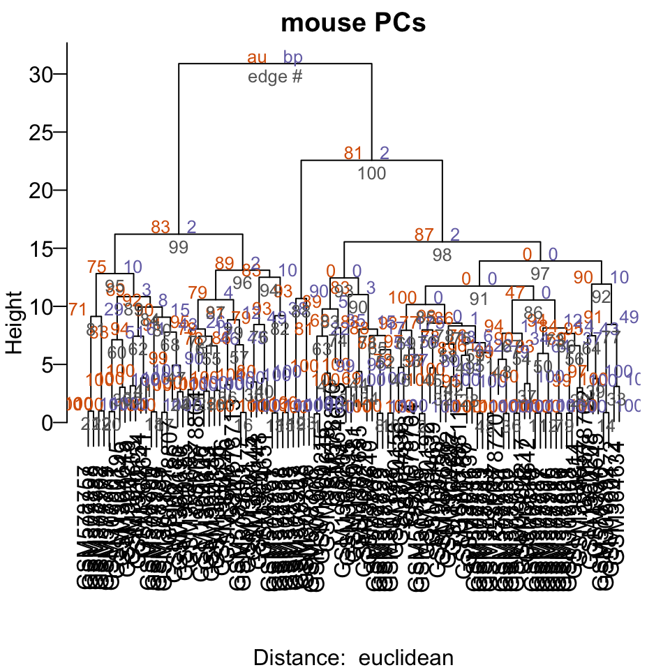
plot(b,las=1,main="human CV")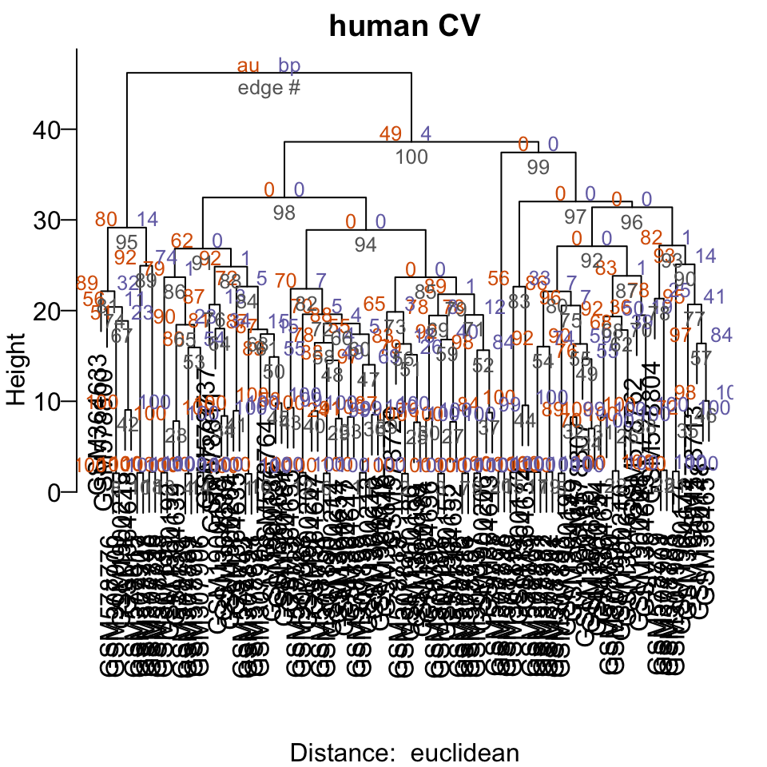
plot(c,las=1,main="human VAR")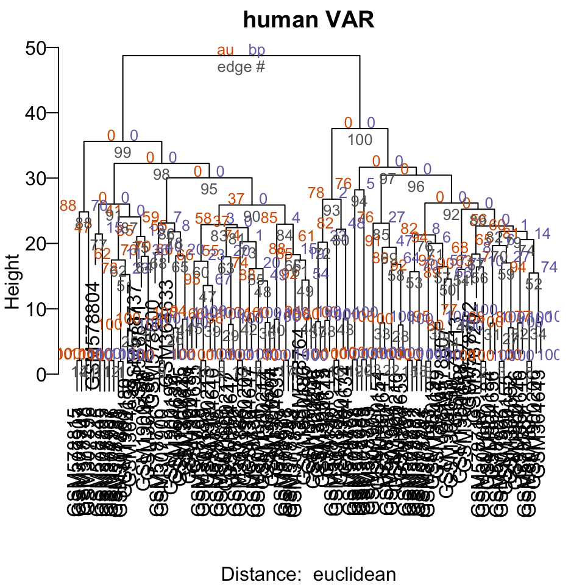
## Bootstrap (r = 0.49)... Done.
## Bootstrap (r = 0.6)... Done.
## Bootstrap (r = 0.68)... Done.
## Bootstrap (r = 0.79)... Done.
## Bootstrap (r = 0.89)... Done.
## Bootstrap (r = 1.0)... Done.
## Bootstrap (r = 1.09)... Done.
## Bootstrap (r = 1.19)... Done.
## Bootstrap (r = 1.3)... Done.
## Bootstrap (r = 1.39)... Done.
## Bootstrap (r = 0.5)... Done.
## Bootstrap (r = 0.6)... Done.
## Bootstrap (r = 0.7)... Done.
## Bootstrap (r = 0.8)... Done.
## Bootstrap (r = 0.9)... Done.
## Bootstrap (r = 1.0)... Done.
## Bootstrap (r = 1.1)... Done.
## Bootstrap (r = 1.2)... Done.
## Bootstrap (r = 1.3)... Done.
## Bootstrap (r = 1.4)... Done.
## Bootstrap (r = 0.5)... Done.
## Bootstrap (r = 0.6)... Done.
## Bootstrap (r = 0.7)... Done.
## Bootstrap (r = 0.8)... Done.
## Bootstrap (r = 0.9)... Done.
## Bootstrap (r = 1.0)... Done.
## Bootstrap (r = 1.1)... Done.
## Bootstrap (r = 1.2)... Done.
## Bootstrap (r = 1.3)... Done.
## Bootstrap (r = 1.4)... Done.13 Cluster tendency
pheatmap(as.matrix(dist(t(data))),color = colorRampPalette(c("steelblue","grey"))(30),border=NA,main="All genes (human)",clustering_method = "complete",clustering_distance_cols = "euclidean",clustering_distance_rows = "euclidean")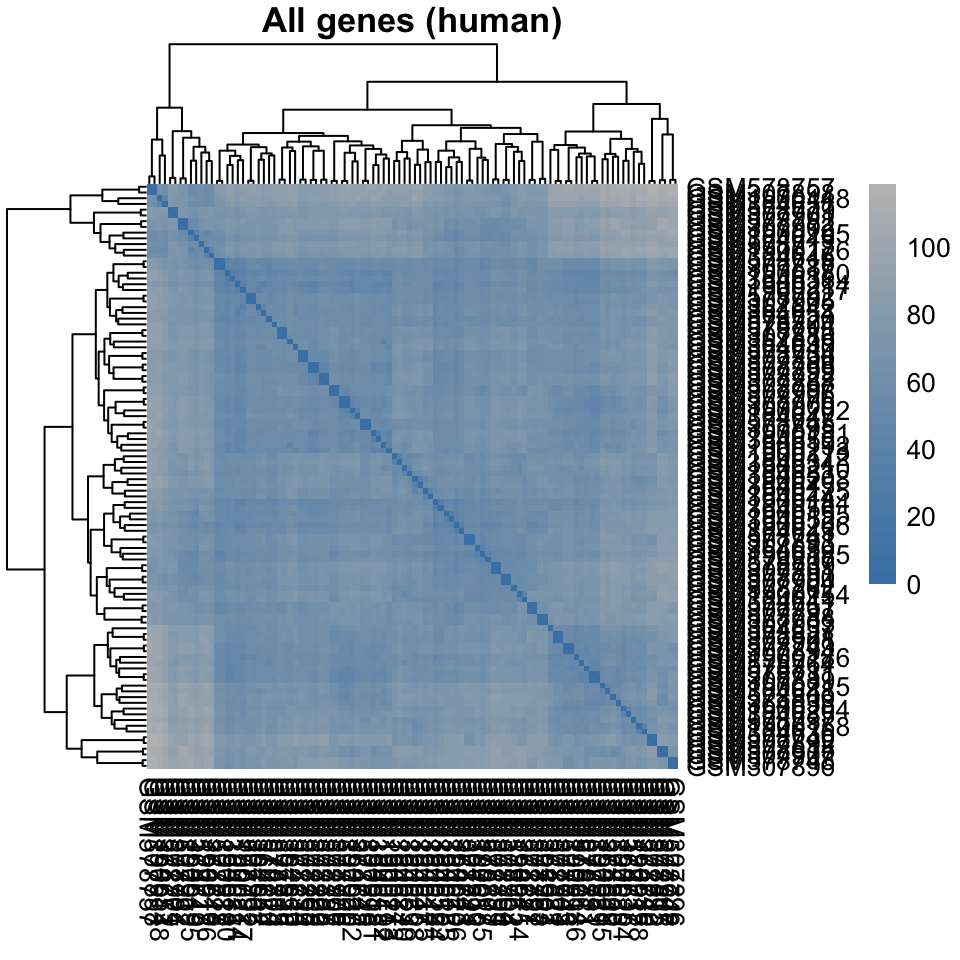
pheatmap(as.matrix(dist(t(d_VAR))),color = colorRampPalette(c("steelblue","grey"))(30),border=NA,main="top 100 var (human)",clustering_method = "complete",clustering_distance_cols = "euclidean",clustering_distance_rows = "euclidean")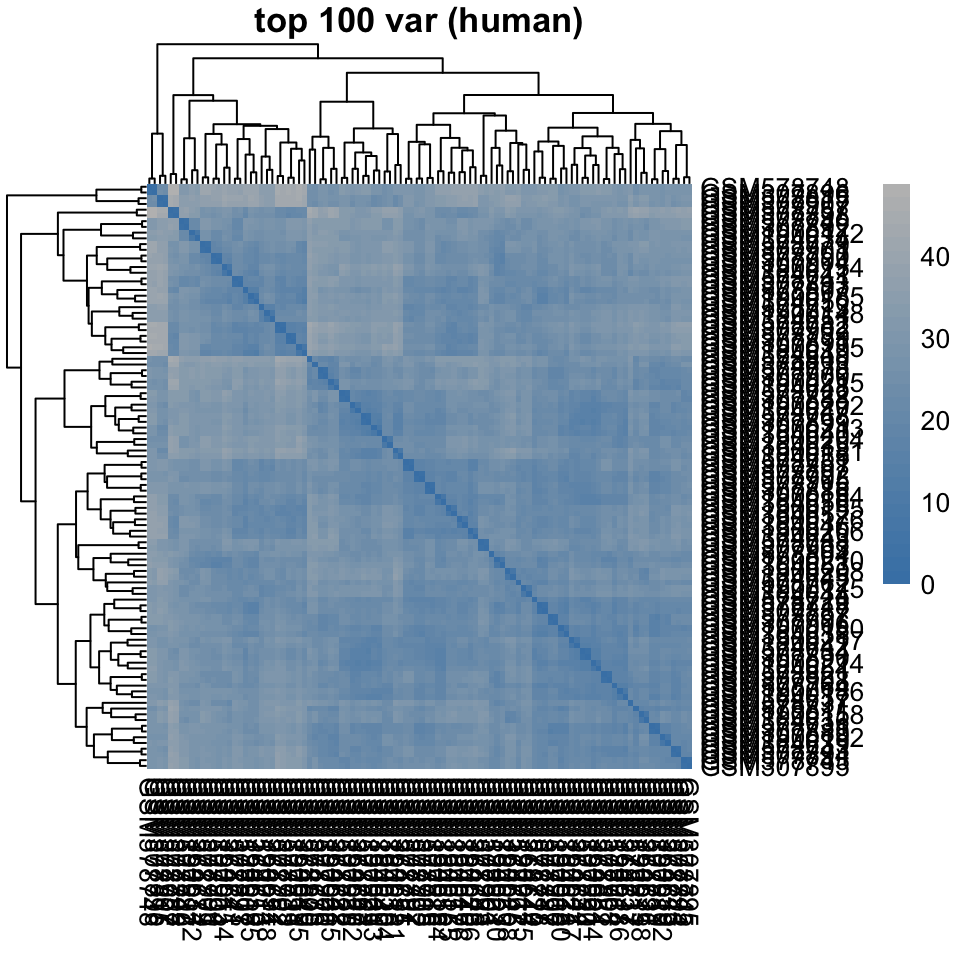
pheatmap(as.matrix(dist(t(d_CV))),color = colorRampPalette(c("steelblue","grey"))(30),border=NA,main="top 100 CV (human)",clustering_method = "complete",clustering_distance_cols = "euclidean",clustering_distance_rows = "euclidean")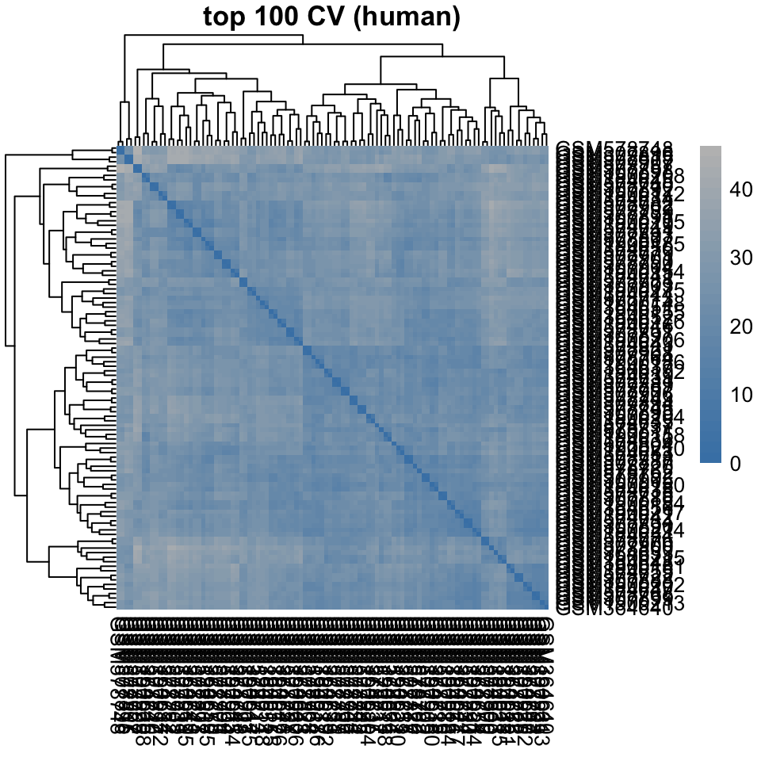
pheatmap(as.matrix(dist(t(cPC))),color = colorRampPalette(c("steelblue","grey"))(30),border=NA,main="PC1+PC1 (mouse)",clustering_method = "complete",clustering_distance_cols = "euclidean",clustering_distance_rows = "euclidean")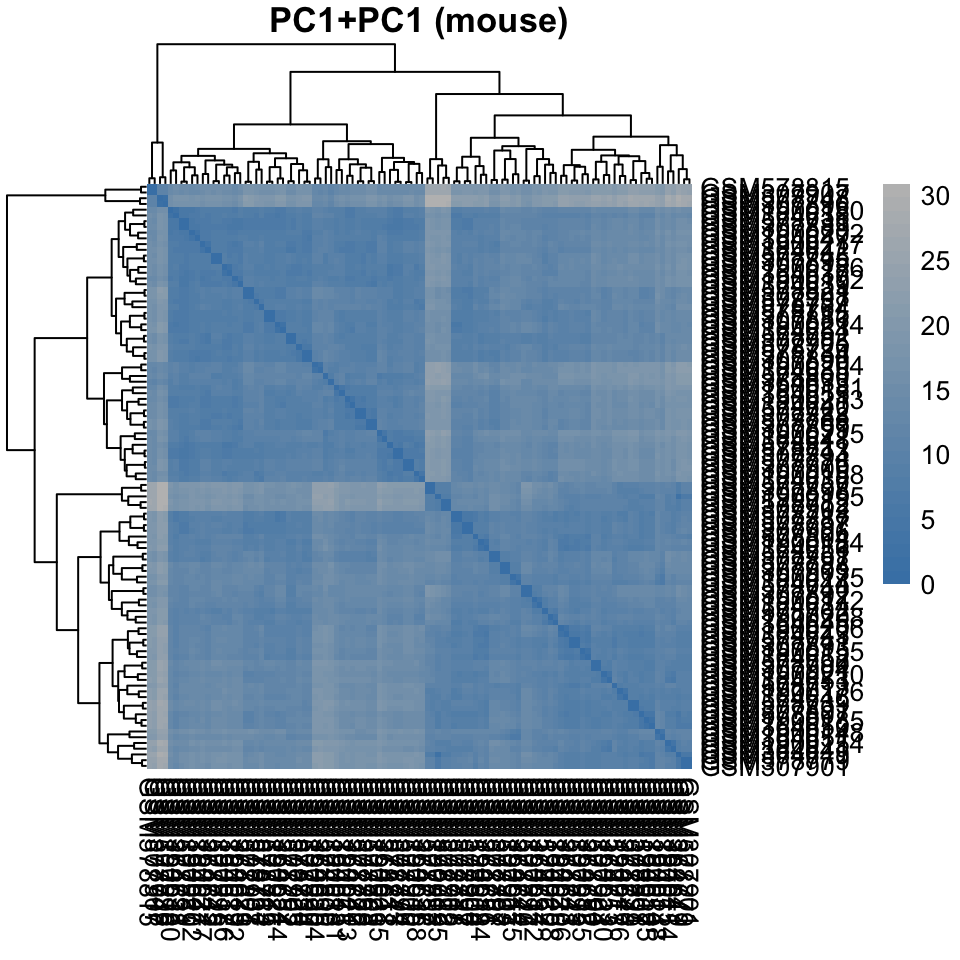
mypar(1,10,mar = c(0.1,0.1,0.1,0.1))
set.seed(123)
tSNE <- Rtsne(t(t_data),perplexity = 30,pca = T,max_iter = 1000,theta = 0.0)
UC_subtype <- classify(t_data)
model <- glm(UC_subtype~tSNE$Y,family="binomial")
slope <- coef(model)[2]/(-coef(model)[3])
intercept <- coef(model)[1]/(-coef(model)[3])
#Sort genes by absolute fold-change
ordered_list <- sort(apply(t_data,1,function(x) abs(mean(x[UC_subtype==levels(UC_subtype)[1]]) - mean(x[UC_subtype==levels(UC_subtype)[2]])) ),decreasing = T)
for(i in names(ordered_list)){
grad <- (t_data[i,] - quantile(t_data[i,],.05)) / (quantile(t_data[i,],.95) - quantile(t_data[i,],.05))
grad[grad < 0] <- 0; grad[grad > 1] <- 1
plot(tSNE$Y[,1],tSNE$Y[,2],cex=1.5,las=1,xaxt="n",yaxt="n",col=colorRampPalette(c("grey90","grey80","navy"))(50)[grad*49+1],pch=as.numeric(UC_subtype)+15,line=.5,xlab="", ylab="",xlim=c(min(tSNE$Y[,1])*out,max(tSNE$Y[,1])*out),ylim=c(min(tSNE$Y[,2])*out,max(tSNE$Y[,2])*out),main=i)
axis(side = 1, labels = FALSE, tck = -0.01);axis(side = 2, labels = FALSE, tck = -0.01)
text(min(tSNE$Y[,1])*out,max(tSNE$Y[,2])*out,i,adj=0,cex=1.5)
abline(c(intercept,slope),lty=2)} 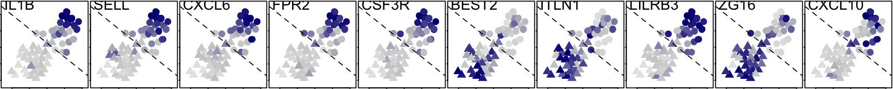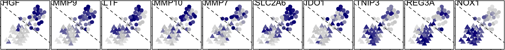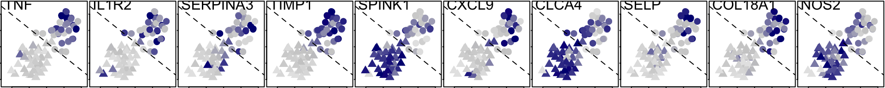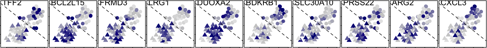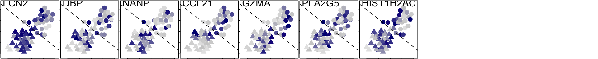
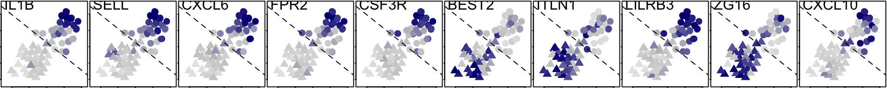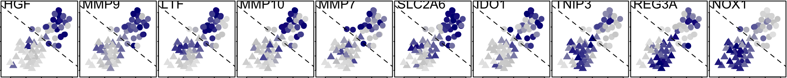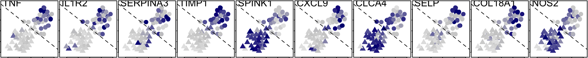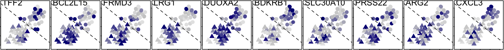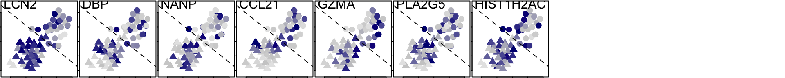
14 Evaluating the response to infliximab for UC1 and UC2
mypar(1,5)
plot(tSNE$Y[,1],tSNE$Y[,2],cex=1.5,las=1,xaxt="n",yaxt="n",col=c("grey","darkgreen")[Group],pch=as.numeric(UC_subtype)+15,line=.5,xlab="tSNE1", ylab="tSNE2",xlim=c(min(tSNE$Y[,1])*out,max(tSNE$Y[,1])*out),ylim=c(min(tSNE$Y[,2])*out,max(tSNE$Y[,2])*out),main="tSNE resp. to IFX")
axis(side = 1, labels = FALSE, tck = -0.01);axis(side = 2, labels = FALSE, tck = -0.01)
abline(intercept,slope,lty=2)
plot(tSNE$Y[,1],tSNE$Y[,2],cex=1.5,las=1,xaxt="n",yaxt="n",col=pallete[factor(phenotData$GEO)],pch=as.numeric(UC_subtype)+15,line=.5,xlab="tSNE1", ylab="tSNE2",xlim=c(min(tSNE$Y[,1])*out,max(tSNE$Y[,1])*out),ylim=c(min(tSNE$Y[,2])*out,max(tSNE$Y[,2])*out),main="tSNE by dataset")
axis(side = 1, labels = FALSE, tck = -0.01);axis(side = 2, labels = FALSE, tck = -0.01)
abline(intercept,slope,lty=2)
temp <- list()
for(i in levels(UC_subtype)){
for(j in unique(phenotData$GEO)){
temp[["1"]] <- c(temp[["1"]] ,100*sum(Group[(phenotData$GEO==j) & (UC_subtype==i)]=="R") / length(Group[(phenotData$GEO==j) & (UC_subtype==i)]))
temp[["2"]] <- c(temp[["2"]],i)
temp[["3"]] <- c(temp[["3"]],j) }}
boxplot(temp[[1]]~factor(temp[[2]]),cex=2,las=1,ylim=c(0,100),yaxs="i",xlab="UC subtype",ylab="% response to IFX",type="n",border="white")
for(i in 1:2){
a <- temp[[1]] [factor(temp[[2]])==levels(factor(temp[[2]]))[i] ]
mb <- mean(a)
polygon(c(i-.4,i-.4,i+.4,i+.4),c(0,mb,mb,0),col=pallete[i])
sb <- sd(a)/sqrt(length(a))
#lines(c(i-.4,i+.4),c(mb,mb),lwd=5)
lines(c(i,i),c(mb-sb,mb+sb))
lines(c(i-.2,i+.2),c(mb+sb,mb+sb)); lines(c(i-.2,i+.2),c(mb-sb,mb-sb))}
beeswarm(temp[[1]]~factor(temp[[2]]),pwbg = pallete[factor(temp[[2]])],pwpch = 14+as.numeric(factor(temp[[3]])),pwcol = rep("black",length(factor(temp[[2]]))),cex=2,las=1,ylim=c(0,100),yaxs="i",xlab="UC subtype",ylab="% response to IFX",add=T)
text(1.5,95,paste0("p = ",signif(t.test(temp[[1]]~factor(temp[[2]]))$p.value,3)))
lines(c(1,2),c(90,90))
plot(c(0,1),c(0,1),type="n",axes=F,xlab="",ylab="")
legend(0,1,levels(factor(temp[[3]])),pch=14+as.numeric(factor(levels(factor(temp[[3]])))),pt.cex = 2,col ="black",box.lwd = 0)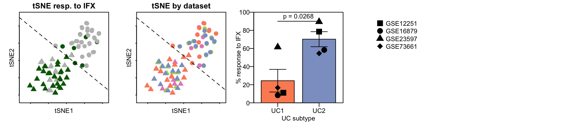
15 Computing DEGs between UC1 vs UC2
set <- ExpressionSet(as.matrix(data)); pData(set) <- phenotData
design <- model.matrix(~UC_subtype)
colnames(design) <- levels(UC_subtype)
fit <- lmFit(set, design)
fit <- contrasts.fit(fit,coefficients = 2)
fit <- eBayes(fit)
top <- topTable(fit,number = "all")
pValue <- as.matrix(top)[,"P.Value"]
logFC <- as.matrix(top)[,"logFC"]
FDR <- as.matrix(top)[,"adj.P.Val"]
pT <- 10
lT <- .7
top_DE <- rownames(top)[ifelse(abs(logFC) < lT,FALSE,ifelse(-log10(FDR) < pT,FALSE,TRUE))]
mypar(1,2)
plot(logFC,-log10(FDR),pch=16,xlim=c(-4,4),col=ifelse(names(logFC) %in% top_DE,"red","black"),cex=.6,yaxs="i",ylim=c(0,max(-log10(FDR))*1.1 ),las=1)
abline(v=c(-lT,lT),h=pT,lty=5,col="grey50")
plot(logFC,-log10(FDR),pch=16,xlim=c(-4,4),col=ifelse(names(logFC) %in% top_DE,"red","black"),cex=.6,yaxs="i",ylim=c(0,max(-log10(FDR))*1.1 ),las=1)
abline(v=c(-lT,lT),h=pT,lty=5,col="grey50")
text(logFC[top_DE],-log10(FDR)[top_DE],top_DE,pos=3,cex=.4)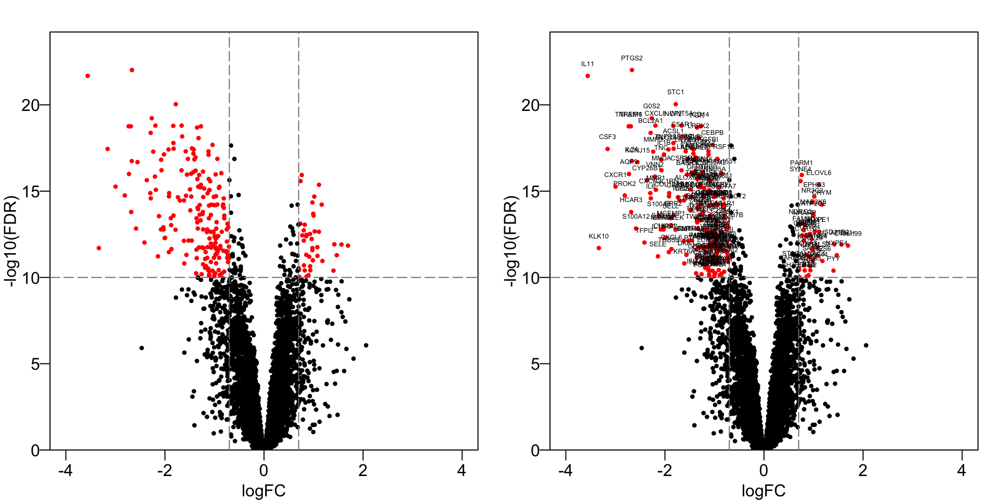
16 Ploting the variance of mouse PC genes in the human dataset
par(mar=c(2,6,3,1),mfrow=c(1,4))
barplot(top_rowVAR[100:1],horiz=T,las=1,col=ifelse(names(top_rowVAR[100:1]) %in% rownames(cPC),"red","grey"),xlim=c(0,max(top_rowVAR[100:1])*1.4),yaxs="i",xaxs="i",main="human rowVar",xlab="variance",border=NA)
legend("bottomright",c("found\nin mouse"),pch = 22,bty = "n",pt.bg = "red",pt.cex = 2)
temp <- sort(rowVAR,decreasing = T)
barplot(temp[names(temp) %in% rownames(cPC)][nrow(cPC):1],horiz=T,las=1,col="red",xlim=c(0,max(temp)*1.4),yaxs="i",xaxs="i",main="human rowVar (only mouse genes)",xlab="variance",border=NA)
legend("bottomright",c("found\nin mouse"),pch = 22,bty = "n",pt.bg = "red",pt.cex = 2)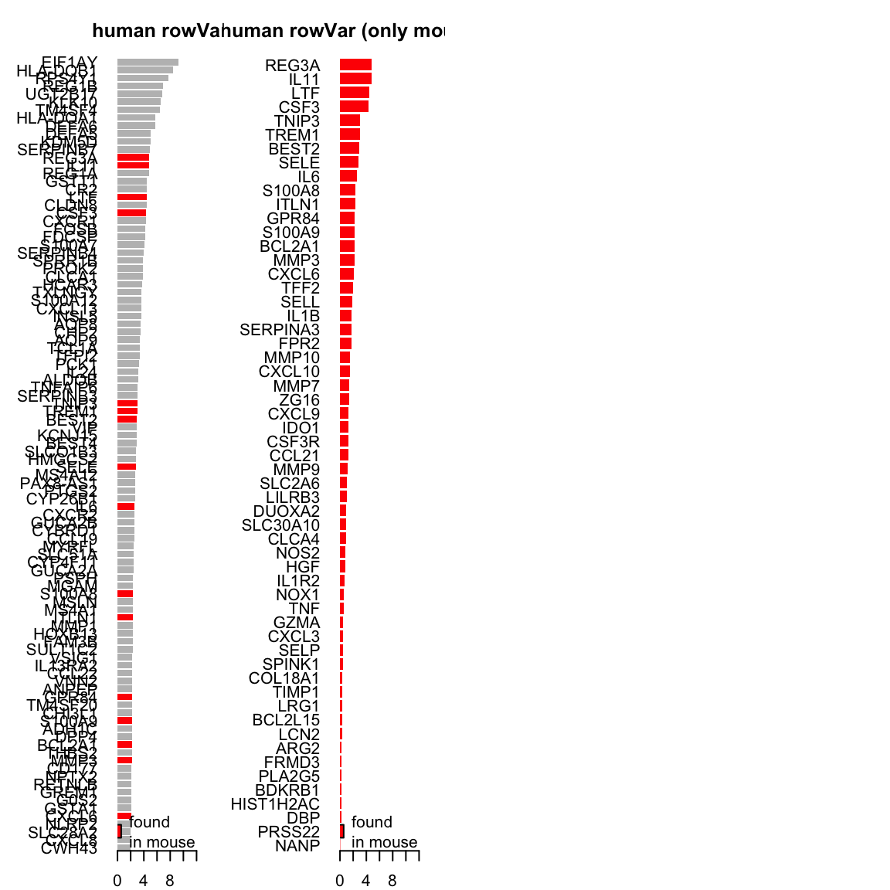
17 Ploting heatmap comparing UC1 vs UC2
mypar()
ann_groups <- data.frame(ann_groups=UC_subtype,row.names=colnames(data))
tag_colors <- pallete[1:length(levels(UC_subtype))]; names(tag_colors) <- unique(ann_groups)[[1]]
o <- order(ann_groups$ann_groups)
pheatmap(data[top_DE,o],col=colorRampPalette(c("navy","navy","white","firebrick","firebrick"))(50),clustering_method = "ward.D2",border_color = NA,scale = "row",annotation_col = as.data.frame(ann_groups), annotation_colors = list(ann_groups = tag_colors),cluster_cols = F,fontsize_row = 5)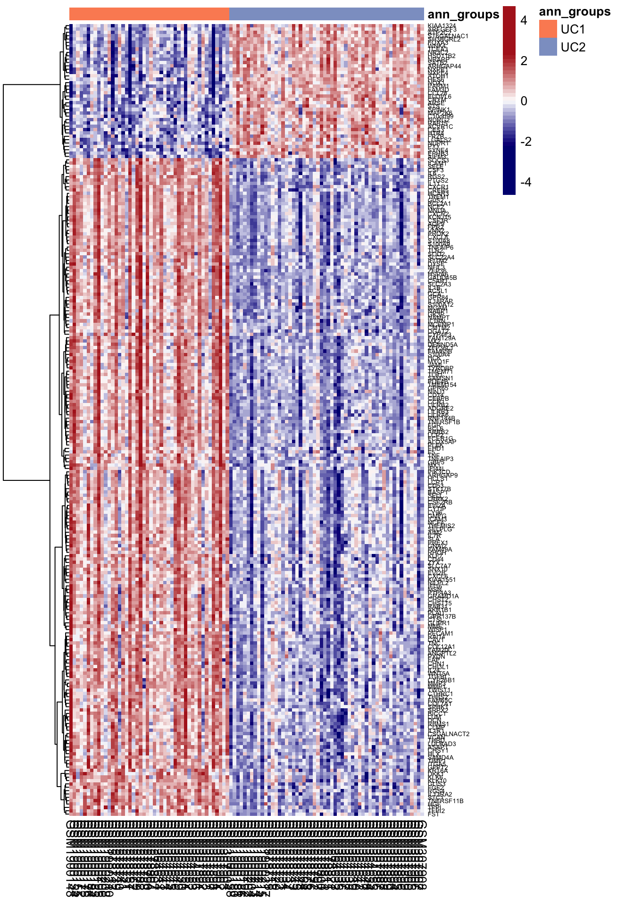
18 Computing gene set analysis on DEG between UC1 and UC2
n <- 7
for (i in c(T,F)){
temp <- top_DE[ (logFC[top_DE] > 0) == i]
cell <- enrichr(genes=temp, databases = "ARCHS4_Tissues")[[1]]
cell <- cell[grep("[(]",cell$Term,invert = T),]
go <- enrichr(genes=temp, databases = "GO_Biological_Process_2017b")[[1]]
go$Term <- sub(" [(].*","",go$Term) #Remove the GO ID
go <- go[grep("regulation",go$Term,invert = T),] #Remove terms related to regulation of processes
kegg <- enrichr(genes=temp, databases = "KEGG_2016")[[1]]
kegg <- kegg[grep("_hsa05",kegg$Term,invert = T),] #Remove disease-related KEGG pathways ("hsa05"")
kegg$Term <- sub("_H.*","",kegg$Term) #Remove KEGG tag "_Homo sapiens_hsa00770"
par(mar=c(4,15,1,1),mfrow=c(1,3))
barplot(cell[n:1,"Combined.Score"],names.arg=cell[n:1,1],horiz=T,las=1,col=colorRampPalette(c(3,"grey90"))(n)[n:1],xlab="Combined.Score",xlim=c(0,max(cell[n:1,"Combined.Score"],4)*1.5),tck=-.05,border=NA,main=paste0("cell (",ifelse(i,"UP in UC2","UP in UC1"),")"),xaxs="i")
abline(v=c(0,2),lty=c(1,2),lwd=c(3,1),col="black")
barplot(go[n:1,"Combined.Score"],names.arg=go[n:1,1],horiz=T,las=1,col=colorRampPalette(c(3,"grey90"))(n)[n:1],xlab="Combined.Score",xlim=c(0,max(go[n:1,"Combined.Score"],4)*1.5),tck=-.05,border=NA,main=paste0("GO (",ifelse(i,"UP in UC2","UP in UC1"),")"),xaxs="i")
abline(v=c(0,2),lty=c(1,2),lwd=c(3,1),col="black")
barplot(kegg[n:1,"Combined.Score"],names.arg=kegg[n:1,1],horiz=T,las=1,col=colorRampPalette(c(3,"grey90"))(n)[n:1],xlab="Combined.Score",xlim=c(0,max(kegg[n:1,"Combined.Score"],4)*1.6),tck=-.05,border=NA,main=paste0("KEGG (",ifelse(i,"UP in UC2","UP in UC1"),")"),xaxs="i")
abline(v=c(0,2),lty=c(1,2),lwd=c(3,1),col="black")
}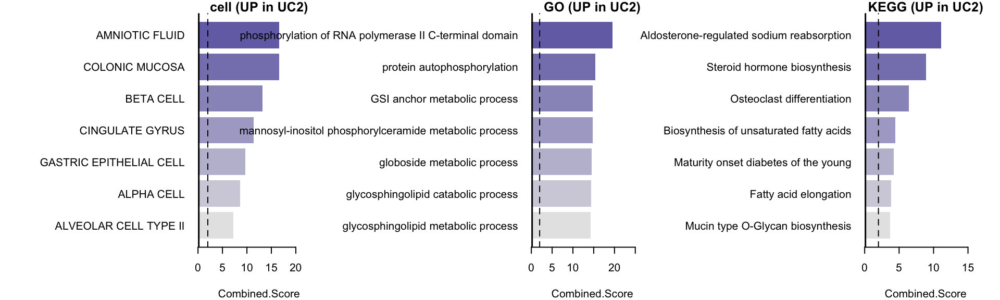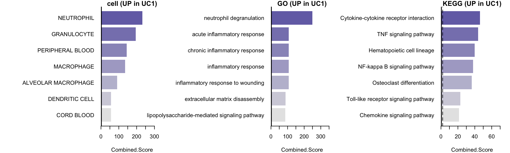
19 Comparing enriched terms among the differentially expressed genes
mypar(1,2)
input <- list("NEUTROPHIL"=strsplit(cell$Genes[1],";")[[1]],"Neutrophil degranulation"=strsplit(go$Genes[1],";")[[1]],"Cytokine-cytokine receptor interaction"=strsplit(kegg$Genes[1],";")[[1]])
a<-attr(venn(input), "intersections")
title(main = "Top Down-regulated genes")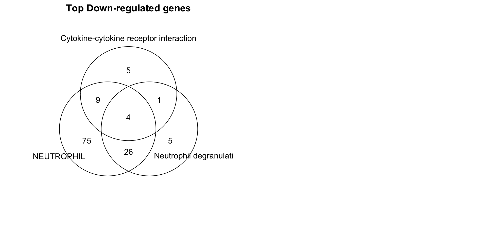
20 tSNE gene expression of DEGs between UC1 vs UC2
mypar(1,10,mar = c(0.1,0.1,0.1,0.1))
#Sort genes by absolute fold-change
ordered_list <- sort(logFC[top_DE])
for(i in names(ordered_list)){
grad <- (data[i,] - quantile(data[i,],.05)) / (quantile(data[i,],.95) - quantile(data[i,],.05))
grad[grad < 0] <- 0; grad[grad > 1] <- 1
plot(tSNE$Y[,1],tSNE$Y[,2],cex=1.5,las=1,xaxt="n",yaxt="n",col=colorRampPalette(c("grey90","grey80","navy"))(50)[grad*49+1],pch=as.numeric(UC_subtype)+15,line=.5,xlab="", ylab="",xlim=c(min(tSNE$Y[,1])*out,max(tSNE$Y[,1])*out),ylim=c(min(tSNE$Y[,2])*out,max(tSNE$Y[,2])*out),main=i)
axis(side = 1, labels = FALSE, tck = -0.01);axis(side = 2, labels = FALSE, tck = -0.01)
text(min(tSNE$Y[,1])*out,max(tSNE$Y[,2])*out,i,adj=0,cex=1.5)
abline(c(intercept,slope),lty=2)}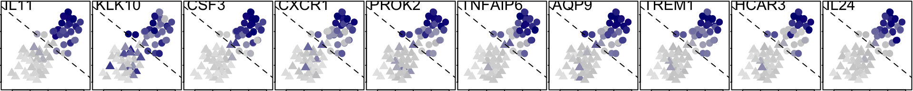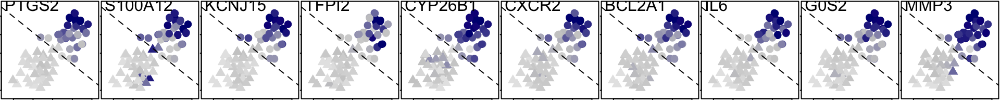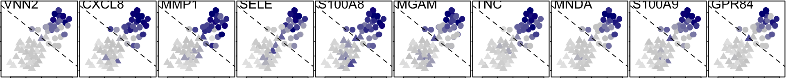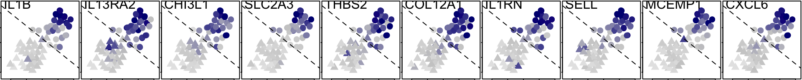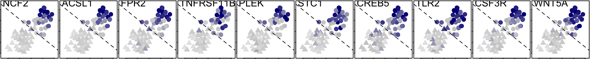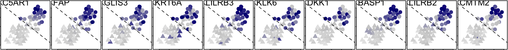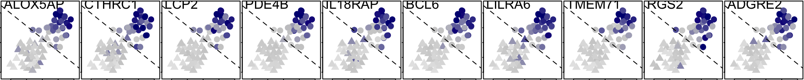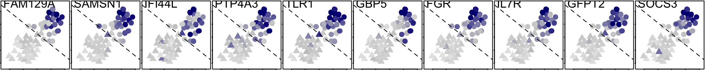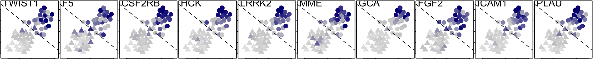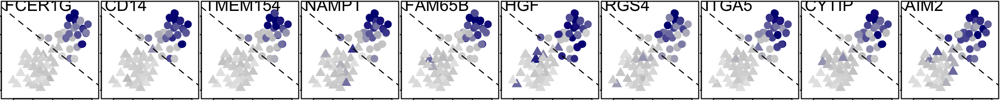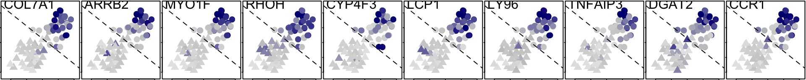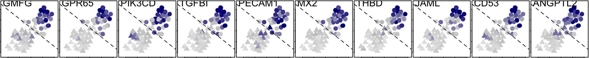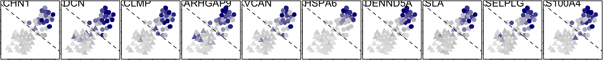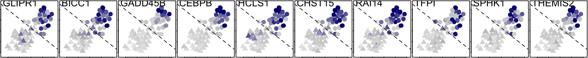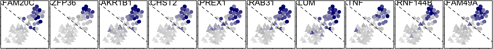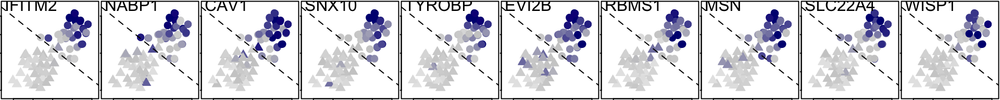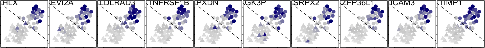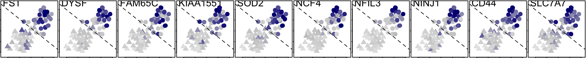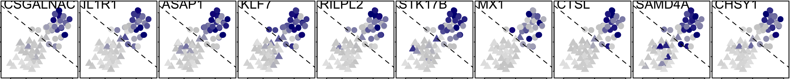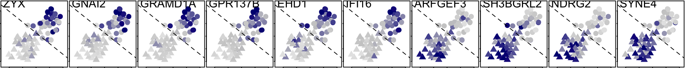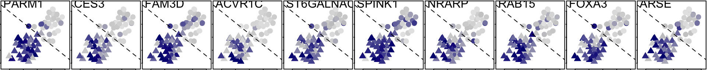 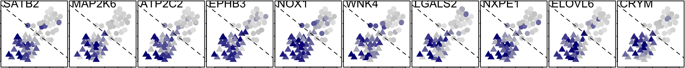
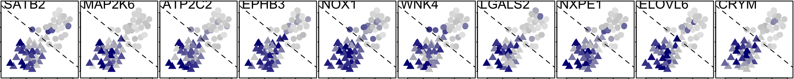
21 ViolinPlot gene expression of DEGs between UC1 vs UC2
mypar(1,11,mar = c(2,2,2,1))
#Sort genes by absolute fold-change
ordered_list <- sort(logFC[top_DE])
for(i in names(ordered_list)){
my_violins(data[i,],UC_subtype,main = i,color = pallete)}


22 Logistic regression for each gene to discern UC1 from UC2
AUC <- sapply(top_DE,function(x){
model <- glm((UC_subtype=="UC1") ~ data[x,],family = "binomial")
x <- round(confusionMatrix(as.factor(ifelse(model$linear.predictors > .5,"UC1","UC2")), UC_subtype)$overall[[1]]*100,2)
})
mypar(1,10)
for(i in names(sort(logFC[top_DE]))){
model <- glm((UC_subtype=="UC1") ~ data[i,],family = "binomial")
plot(data[i,],as.numeric(model$fitted.values),col=pallete[UC_subtype],pch=16,las=1,main=i,ylab="LR fitted values",xaxs="i",xlab="expression level")
text(min(data[i,]),.95,round(AUC[i],2),adj = 0)
abline(h=0.5,lty=2)
}
23 Plot top predictors
par(mfrow=c(1,1),mar=c(3,5,3,3))
temp <- sort(AUC,decreasing = T)
barplot(temp[c(20:1)],horiz=T,xlim=c(80,100),xaxs="i",yaxs="i",las=1,xlab="% Accuracy",border=NA,col=colorRampPalette(c("grey80","navy"))(40)[1:40],xpd=F )
abline(v=c(80,90,100),col="black",lty=c(1,2,2),lwd=c(2,1,1))24 Plot histological MAYO score for UC1 vs UC2
names(UC_subtype) <- colnames(data)
pdataGSE73661 <- pData(gsetGSE73661)
f1 <- pdataGSE73661$`mayo endoscopic subscore:ch1`
f2 <- pdataGSE73661$`induction therapy_maintenance therapy:ch1` == "IFX"
f3 <- pdataGSE73661$`week (w):ch1` == "W0"
MAYO <- as.numeric(pdataGSE73661[f2&f3,]$`mayo endoscopic subscore:ch1`)
names(MAYO) <- pdataGSE73661[f2&f3,]$geo_accession
boxplot(MAYO ~ UC_subtype[names(MAYO)],cex=2,las=1,ylim=c(0,5),yaxs="i",xlab="UC subtype",ylab="% response to IFX",type="n",border="white")
for(i in 1:2){
a <- MAYO [UC_subtype[names(MAYO)]==levels(UC_subtype[names(MAYO)])[i] ]
mb <- mean(a)
polygon(c(i-.4,i-.4,i+.4,i+.4),c(0,mb,mb,0),col=pallete[i])
sb <- sd(a)/sqrt(length(a))
#lines(c(i-.4,i+.4),c(mb,mb),lwd=5)
lines(c(i,i),c(mb-sb,mb+sb))
lines(c(i-.2,i+.2),c(mb+sb,mb+sb)); lines(c(i-.2,i+.2),c(mb-sb,mb-sb))}
beeswarm(MAYO~UC_subtype[names(MAYO)],pwbg = pallete[UC_subtype[names(MAYO)]],pwpch = 15+as.numeric(UC_subtype[names(MAYO)]),col="black",cex=1,las=1,ylim=c(0,100),yaxs="i",xlab="UC subtype",ylab="Mayo Score",add=T,corral="gutter",method="hex")
stat <- signif(wilcox.test(MAYO~UC_subtype[names(MAYO)])$p.value,3)
text(1.5,4.5,paste0("ns\np = ",signif(wilcox.test(MAYO~UC_subtype[names(MAYO)])$p.value,3)))
lines(c(1,2),c(4,4))